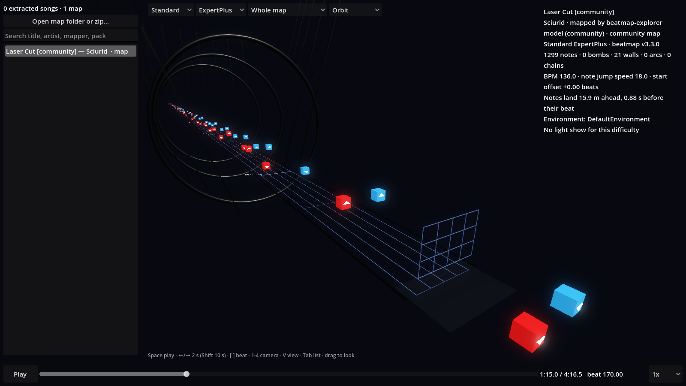
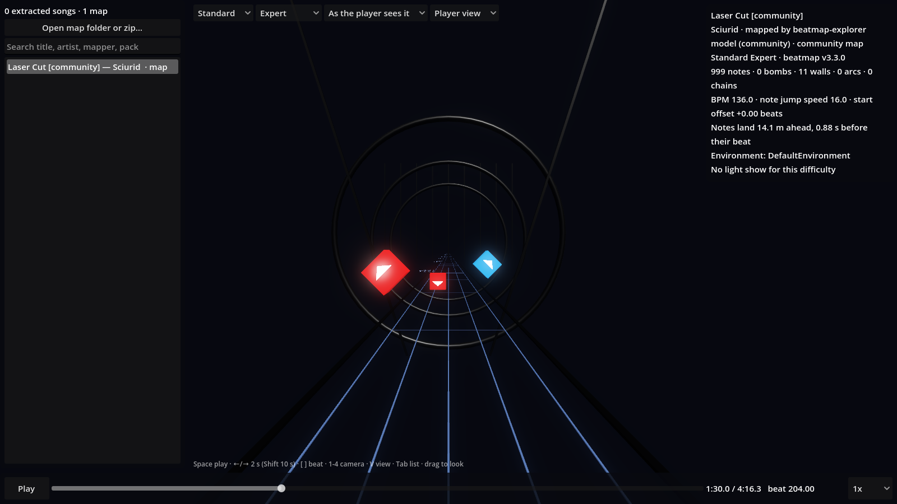
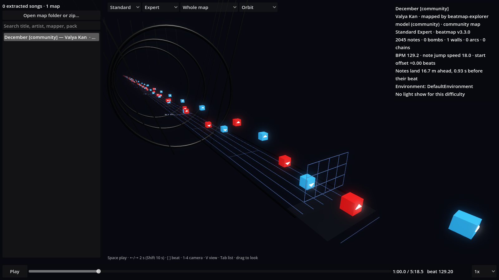
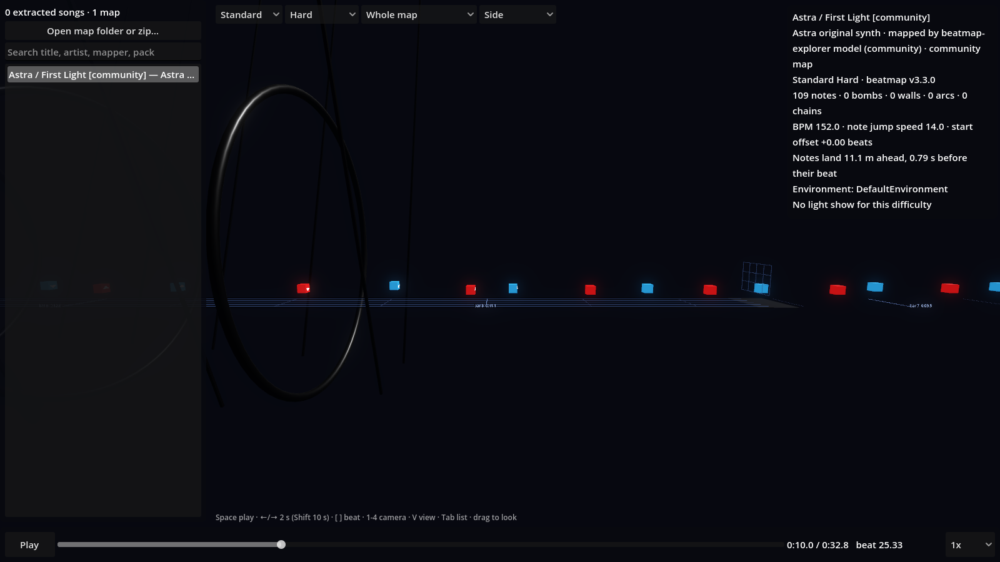

2026-11-24 · 26M-parameter model, 20 minutes on one rented RTX 4090, 5,145 BeatSaver songs (14,821 difficulties)
Held-out loss on BeatSaver songs it never heard
Table
step
held-out loss
1500
2.009
3000
1.836
4500
1.735
6000
1.647
7500
1.601
8844
1.587
Scores on held-out BeatSaver maps (small sample: 6 difficulties of 2 songs)
song
difficulty
timing F1
colour F1
place
cut
density
speed
mapper's speed
BOOM
Easy
0.226
0.118
0.455
0.455
1.137
10
10.000
BOOM
Normal
0.235
0.136
0.255
0.436
3.101
14
12.000
BOOM
Hard
0.369
0.176
0.239
0.337
1.603
16
14.000
BOOM
Expert
0.387
0.265
0.171
0.253
1.633
16
16.000
BOOM
ExpertPlus
0.345
0.237
0.217
0.238
1.458
18
18.000
Miku
Expert
0.393
0.239
0.234
0.204
1.046
16
18.000
mean
0.326
0.195
0.262
0.320
1.663

Expert+ it made for "Laser Cut" by Sciurid (Illusory, Secret Centre, 2020; CC BY 4.0, archive.org/details/secretcentre)

The same song's Expert from the player's place, showing only what has landed on the lane

Expert for "December" by Valya Kan (Yarn Audio, YARN020, 2018; CC BY 4.0, archive.org/details/yarn020)

Hard for "Astra / First Light", from the side
Notes
Timing F1: share of notes at the right moment (within 30 ms of the mapper's), colour ignored; colour F1 adds the hand. Place and cut: agreement on lane/row and cut direction for matched notes. Density: generated notes per second / the mapper's.
Maps are generated with guard rails: a hand's notes at least 0.2-0.6 s apart by difficulty, at most one new wall a second, bombs only when both hands are free. Without them the model overfills (density 1.66 on this sample).
Not yet: arcs, chains and lights; more training (this run used a sixth of the dataset for 20 minutes).
The trained weights are not published: they learned from community maps whose mappers keep their rights.